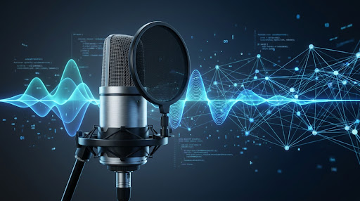

InterviewTTS
Digital Twin por Voz
Un clon digital de voz que permite a los reclutadores entrevistar a un candidato mediante una conversacion de voz asistida por IA. Construido como proyecto de aprendizaje en IA/ML.
El Problema
Los reclutadores dedican en promedio 6 segundos a revisar un CV. En ese tiempo, todo lo que un candidato puede comunicar se reduce a unas cuantas lineas de texto plano. La voz, el tono, la capacidad de explicar ideas complejas... todo se pierde.
Imagine poder crear un clone digital que responda preguntas tecnicas, comunique su experiencia y demuestre conocimiento profundo del dominio del candidato, todo ello mediante una conversacion de voz natural.
Que es InterviewTTS
InterviewTTS es un sistema de doblete digital basado en voz. Funciona as:
- Un reclutador habla al microfono del navegador
- El audio se envia a un servidor FastAPI via Server-Sent Events (SSE)
- Whisper convierte la voz a texto (STT)
- Un sistema RAG busca contexto relevante en una wiki del candidato (~30 documentos Markdown)
- Un LLM genera una respuesta informada y natural
- Pocket TTS sintetiza la respuesta en voz y la envia de vuelta, token por token
El resultado es una experiencia de entrevista por voz que se siente conversacional y natural.
Indice de Capitulos
Arquitectura End-to-End
Pipeline de voz completo: del microfono del navegador al audio sintetizado. Flujo por turno, SSE vs WebSockets, y porque elegimos el patron que elegimos.
Speech-to-Text con Whisper
Deep dive en faster-whisper, CTranslate2, cuantizacion int8 vs float16, y porque el modelo medium es el sweet spot para nuestro VPS ARM64.
RAG: Recuperacion Aumentada por Generacion
La estrella del sistema. Embeddings, similitud coseno, chunking por headers, query expansion, y persistencia de embeddings en disco.
LLM y Prompt Engineering
Como reduje el system prompt de 1200 a 600 caracteres, reglas anti-razonamiento, y orquestacion multi-proveedor con degradacion elegante.
Cache y Optimizacion de Latencia
El proceso de medicion como disciplina: de ~20s a ~5s promedio. Cache FAQ, embeddings en disco, Whisper medium, y SSE.
Despliegue en Produccion
Oracle Free Tier ARM64, $0/mes, sin GPU. Nginx, systemd, y los tradeoffs documentados de correr inferencia CPU-only.
Aprendizajes y Reflexion
FastAPI async, Docker por prueba y error, arquitectura RAG desde cero, TDD con 155+ tests, y lo que aprendi construyendo esto.